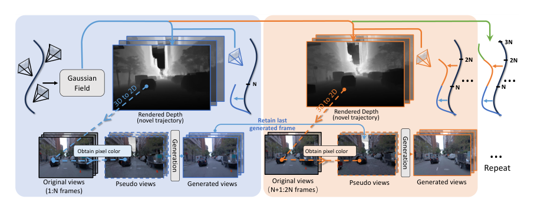
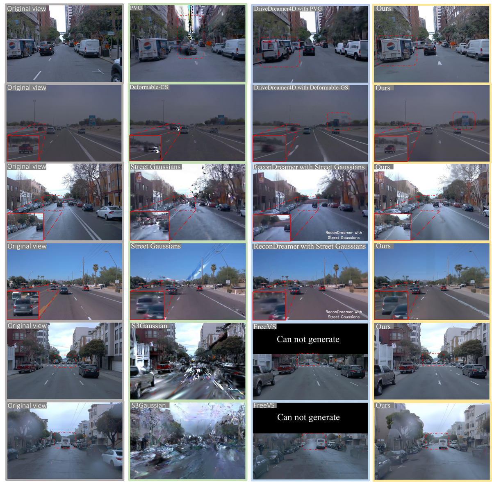
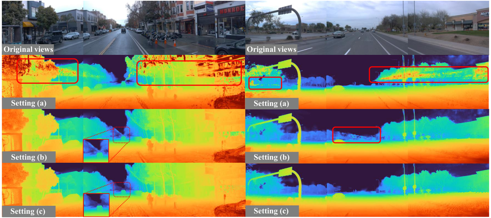
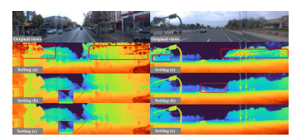

GA-Drive：自由视点驾驶场景的几何外观解耦建模
简单摘要
自由视角、可编辑且高保真的驾驶仿真器对端到端自动驾驶系统的训练和评估至关重要。传统驾驶仿真器依赖手工制作的3D资产和基于规则的交通模型，缺乏真实感且扩展困难。基于NeRF的方法提供逼真渲染但渲染速度慢且难以编辑；基于3DGS的方法渲染快速但对动态场景和视角编辑的支持有限。GA-Drive提出了一种新颖的仿真框架，通过几何-外观解耦和基于扩散的生成来实现用户指定新轨迹下的相机视图生成。给定沿记录轨迹捕获的图像和对应场景几何（由LiDAR或SfM提供），首先使用几何引导变形从记录视图生成伪新视角——通过已知的3D几何将像素从源视角变形到目标视角；然后用扩散模型对伪视图进行精炼，弥补几何投影带来的缺失区域和细节损失。几何-外观解耦设计允许在不改变场景外观的情况下灵活控制视角，扩散模型确保生成视图的逼真度，使GA-Drive在自由视角驾驶仿真中达到最先进质量。
 图 1
图 1核心创新
第一，提出几何-外观解耦的驾驶仿真框架——几何分支利用显式3D信息进行精确的视角变形，外观分支通过扩散模型进行逼真纹理生成，两者独立优化互不干扰。第二，设计几何引导的伪视图生成——利用场景几何将像素精确地从源视角变形到目标视角，避免了纯生成方法中的几何不一致。第三，提出扩散精炼模块专门处理几何投影的缺失区域（如遮挡边界、超出原视野的区域），保证生成视图的完整性。第四，支持沿任意用户指定轨迹的自由视角渲染，使仿真器可用于闭环评估。
技术细节

架构图：方法整体流程围绕 技术总览，我们采用 OmniRe（一种高斯场景图表示）作为我们的 4D 重建框架。这种模糊性通常会导致高斯分布重建在拟合观察到的颜色时表现出几何失真，例如浮动高斯。一旦一个片段完成，其最终生成的帧将成为下一个片段的第一个调节帧，并且重复该过程。
3 方法
围绕 3 方法，这一节先处理的是 我们的框架概述。几何模块在 中呈现。然后我们描述了几何引导伪视图合成和视频扩散模型。最后，用于训练的伪视图模拟管道在 中详细介绍。作者这样设计，是为了先把输入表示、约束条件或中间状态整理成后续模块能直接使用的形式。
1. 4D几何重建
围绕 3.1 4D几何重建，我们采用 OmniRe（一种高斯场景图表示）作为我们的 4D 重建框架。这种模糊性通常会导致高斯分布重建在拟合观察到的颜色时表现出几何失真，例如浮动高斯。这种密集的监督在视点变化有限的场景中尤其重要，其中更大的几何模糊性使得可靠的 3D 几何重建具有挑战性。
2. 几何引导的伪视图合成
围绕 3.2 几何引导的伪视图合成，给定驾驶场景的 4D 重建，我们根据像素的深度（从 4D 重建得出）将光线从每个像素投射到 3D 空间中。在特定的时间戳，假设我们可以访问记录的图像，以及它们相应的相机姿势和从高斯场渲染的深度图。我们引入一个公差参数来解决几何中潜在的不准确性。这条式子把若干坐标、状态或参数组织成矩阵/向量形式，用于后续几何变换、投影计算或状态更新。理解时重点看每一项分别代表哪一类量，以及这个矩阵最终服务于哪一步运算。
$$ \begin{split} \mathbf{x}_c^{(i)} &= \mathbf{T}_i^{-1} \begin{bmatrix} \mathbf{x}_w \\ 1 \end{bmatrix}, \\ \mathbf{p}^{(i)} = \mathbf{K}_i \cdot \mathbf{x}_c^{(i)}[:3], &\quad \mathbf{u}^{(i)} = ( \frac{p_x^{(i)}}{p_z^{(i)}}, \frac{p_y^{(i)}}{p_z^{(i)}} ). \end{split} $$
放在“方法”这一部分看。这条式子把若干坐标、状态或参数组织成矩阵/向量形式，用于后续几何变换、投影计算或状态更新。理解时重点看每一项分别代表哪一类量，以及这个矩阵最终服务于哪一步运算。
$$ c_{\mathbf{x}_w} = \begin{cases}I_i(\mathbf{u}^{(i)}) & \mbox{if} | \mathbf{D}_i(\mathbf{u}^{(i)}) - \mathbf{x}_c^{(i)}[2] | < \delta. \\ \mathbf{0} & \mbox{otherwise} \end{cases} $$
3. 分段视频扩散模型
围绕 3.3 分段视频扩散模型，为了生成长视频轨迹，我们采用分段方法，其中每个视频片段都以帧序列为条件。第一个条件帧设置为前一段中最后生成的帧，以确保时间一致性，而其余条件帧是沿轨迹的相应伪视图。一旦一个片段完成，其最终生成的帧将成为下一个片段的第一个调节帧，

4. 伪视图模拟管道
我们提出了一种伪视图模拟管道，可以模拟在新颖的伪视图中观察到的特征模式，使我们能够直接在单轨迹数据集上训练分段视频扩散模型。这消除了对多轨迹记录的需求，而多轨迹记录在公共驾驶数据集中是不可用的，因为车辆无法同时穿越多个路径。我们在 Waymo 训练数据集上训练扩散模型，并使用从 OpenDV（从 YouTube 收集的大型驾驶视频数据集）中选择的 700 个具有不同天气条件的视频来训练扩散模型。
实验结论
请参阅展示外观编辑的定性结果。定量比较为了评估我们的模型生成高保真新颖轨迹的能力，我们将其与几个最先进的基线进行定量比较。由于 FreeVS 仅生成部分新颖的视图，因此我们仅将其包含在定性比较中。
此外，我们的方法产生最低的 FID，与其他基线相比，证明了其在生成逼真图像方面的优势。所有实验均基于向左移动 3 米，但第二个 ReconDreamer 比较除外，该比较是在向右移动 3 米的情况下进行评估的。与 ReconDreamer 相比，我们的模型在生成的视图中实现了更高的保真度和时间连贯性。
4.1 外观编辑
由于我们的方法将几何形状与外观分开，因此可以通过修改 ig' src='../assets/2602_20673v2/figure5_full.png'
4.2 比较
定量比较为了评估我们的模型生成高保真新颖轨迹的能高的保真度和时间连贯性。
| Models | PVG | DD4D w/. | — | |||||||
|---|---|---|---|---|---|---|---|---|---|---|
| PVG | Recon. w/. | — | ||||||||
| PVG | S^3Gauss. | DD4D w/. | — | |||||||
| S^3Gauss. | Recon. w/. | — | ||||||||
| S^3Gauss. | Deform.-GS | DD4D w/. | — | |||||||
| Deform.-GS | Recon. w/. | — | ||||||||
| Deform.-GS | Ours | — | ||||||||
| NTA-IoU | 0.256 | 0.438 | 0.464 | 0.175 | 0.495 | 0.413 | 0.240 | 0.335 | 0.443 | 0.558 |
| NTL-IoU | 50.70 | 53.06 | 53.21 | 49.05 | 53.42 | 51.62 | 51.62 | 52.93 | 53.78 | 56.83 |
| FID | 105.29 | 71.52 | 74.32 | 124.90 | 66.93 | 123.61 | 92.24 | 77.32 | 76.24 | 49.77 |
4.3 消融研究
为了评估其有效性，我们在以下配置下在 Waymo 数据集上训练 OmniRe 模型。分段视


4.4 局限性和结论
虽然高斯重建主干可能会因为卷帘快门失真而引入微小的几何误差，特别是在高速驾驶期间。我们推出 GA-Drive，这是一种用于逼真驾驶模拟的新颖框架，可实现新颖的轨迹合成和外观编辑。我们改进的 4D 重建可产生更精确的几何形状。
理解评价
如果把这篇论文放回问题背景里看，它真正的价值在于：在本文中，我们提出了 GA-Drive，这是一种新颖的模拟框架，能够通过几何外观解耦和基于扩散的生成沿着用户指定的新颖轨迹生成相机视图。这说明作者不是只补一个局部模块，而是在重新组织问题该怎样被解决。
最能支撑这个判断的，还是实验给出的证据：大量实验表明，GA-Drive 在 NTA-IoU、NTL-IoU 和 FID 分数方面大大优于现有方法。换句话说，这些设计并不只是概念上更完整，而是实实在在改变了最终结果。
当然，它离真正成熟的方案还有距离：然而，它们只能沿着预先记录的轨迹渲染高质量的视图，限制了它们支持自由视点模拟的能力。后续更值得继续推进的方向，是 未来继续提升效率、泛化能力以及在更复杂场景下的稳定性。